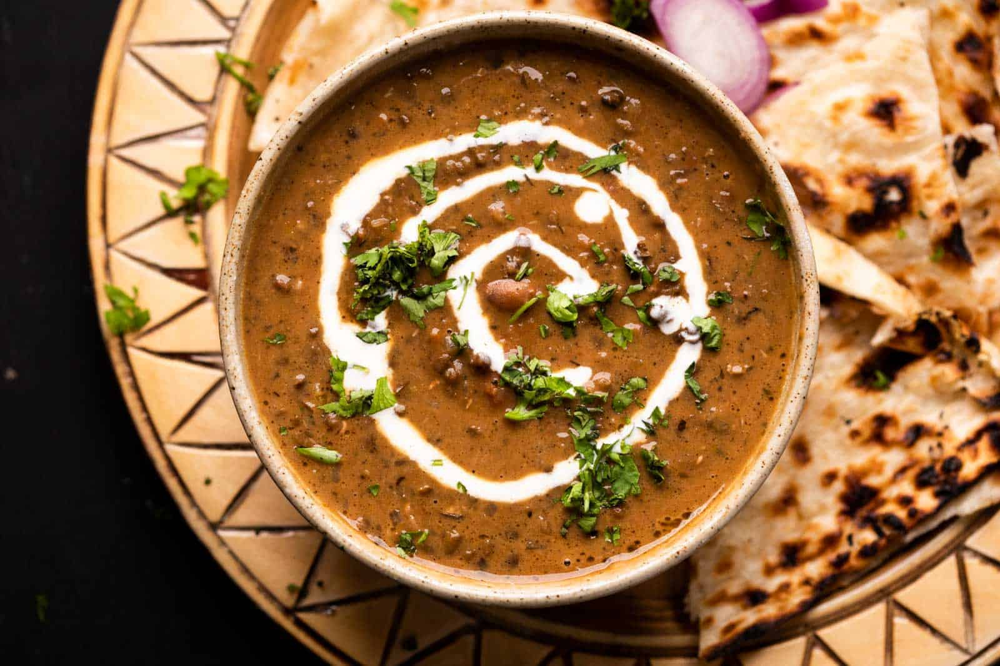

Chicken Biriyani

Simply put, biryani is a spiced mix of meat and rice, traditionally cooked over an open fire in a leather pot. It is combined in different ways with a variety of components to create a number of highly tasty and unique flavor combinations. The word “biryani” itself comes from the word “birian,” a Persian term which translates to “fried before cooking.” Indeed, the roots of this dish have been traced by notable historians to modern day Persia, with appearances in notes under various names as early as 2 CE. The biryani recipe was then much simplified in order to keep it viable during travel. Once the dish reached India, it blossomed into something entirely new. The story goes that Mumtaz Mahal, a Queen of Shah Jahan, visited an army barrack and found the soldiers there to be heavily undernourished. She demanded the barrack’s cook provide the soldiers with a dish that was nutritious and had all the meat, rice, and spices needed to restore their energy. According to legend, this is how the dish first came to India. As various regions across Southern Asia adopted the recipe, it grew and changed to express cultures’ values; leading to the diverse selection of biryani dishes that exist today
Tandoori Chicken

About this dish
The only dish that’s probably more popular than this one would be chicken tikka, but even then it’s a close call. Tandoori chicken’s juicy consistency and mouthwatering spices make it a classic that never really goes out of style and always manages to make new fans with each serving. If you are new to Indian food, you may want to start with tandoori chicken for its universal appeal. The chicken is marinated in ingredients such as yogurt, ginger, garlic, and herbs, and then baked in a clay oven, creating a juicy and delicious flavor. Seafood lovers often opt for shrimp or fish tandoori, and those who are indecisive can find comfort in the tandoori mixed grill, combining chicken, shrimp, fish, and lamb into one savory meal
Rogan Josh

Rogan josh is a staple from Kashmir (North India). Rogan Josh comprises braised sheep meat cooked with sauce. For the most part, Indian cooks make this sauce from seared onions, yogurt, garlic, ginger, and sweet-smelling flavours. Known for its marvellous red colour, a good rogan josh uses ample measures of dried Kashmiri chillies. The majority of the zestiness of Rogan Josh comes from the delicious fragrance of the dish. When in Kashmir, rogan josh with steaming basmati rice is a must-try!
Dal makhani
Most foodies will have heard of or tasted dal, but there’s nothing quite like tasting the original dish in the country where it originated from. Dal is the Hindi word for lentils, and this soup-like delicacy is made by stewing small black lentils for hours on end. Whilst there are many different varieties of this lentil dish, dal makhani is in a league of its own. It’s considered the best of the best, and is reserved for big events like wedding celebrations. With makhani meaning ‘buttery’ in Hindi, there’s no prizes for guessing how rich and creamy this Indian classic tastes. Head to Punjab, in India’s north, to taste the real deal.
Follow this page for more content
Google-Foodholyic
ig-@foodholyicoff_